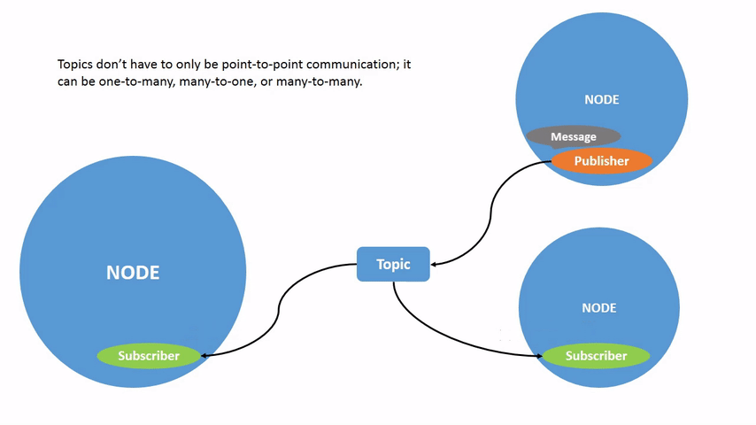
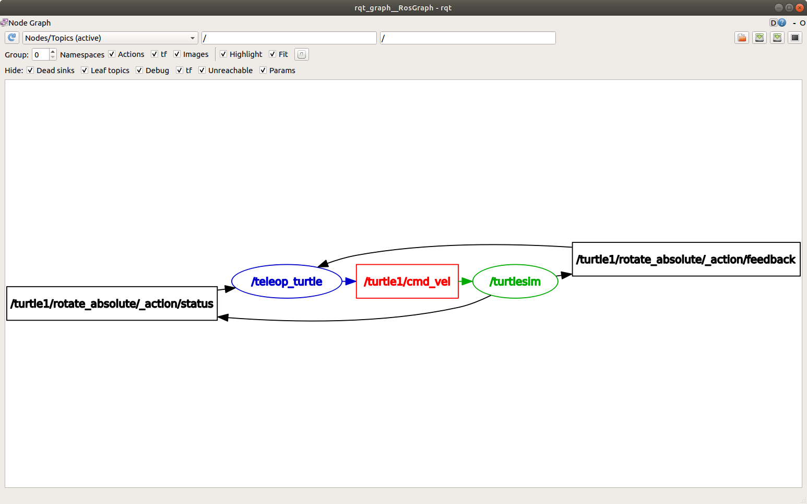

<!DOCTYPE lake>
<h1 data-lake-id="Z0MdH" id="Z0MdH"><span data-lake-id="uf4c56f8c" id="uf4c56f8c" style="color: rgb(51, 51, 51)">topic简介</span></h1><p data-lake-id="u0bd198b4" id="u0bd198b4"><span class="lake-fontsize-12" data-lake-id="u75d0a2e8" id="u75d0a2e8" style="color: rgb(51, 51, 51)">ROS 2 将复杂系统分解为许多模块化节点。topic是 ROS 的重要元素，它充当节点交换消息的总线。</span></p><p data-lake-id="u332d9a10" id="u332d9a10"></p><p data-lake-id="uf53e0e39" id="uf53e0e39"><span class="lake-fontsize-12" data-lake-id="u0cfe3e93" id="u0cfe3e93" style="color: rgb(64, 64, 64); background-color: rgb(252, 252, 252)">一个节点可以向任意数量的主题发布数据，同时订阅任意数量的主题。</span></p><p data-lake-id="u59bd141b" id="u59bd141b"></p><p data-lake-id="uffc93ddf" id="uffc93ddf"><span class="lake-fontsize-12" data-lake-id="ucafdddfb" id="ucafdddfb" style="color: rgb(64, 64, 64); background-color: rgb(252, 252, 252)">主题是数据在节点之间移动的主要方式之一，因此在系统的不同部分之间移动。</span></p><h1 data-lake-id="I9TqJ" id="I9TqJ"><span data-lake-id="u284b014d" id="u284b014d" style="color: rgb(64, 64, 64); background-color: rgb(252, 252, 252)">topic任务</span></h1><h2 data-lake-id="WxPSk" id="WxPSk"><span data-lake-id="u619a7647" id="u619a7647" style="color: rgb(51, 51, 51)">1. 打开2个节点</span></h2><span class="yuque-card-unsupported">[codeblock]</span><h2 data-lake-id="SJ9TO" id="SJ9TO"><span data-lake-id="u8a6276ba" id="u8a6276ba" style="color: rgb(51, 51, 51)">2. 打开rqt_graph</span></h2><p data-lake-id="ub8533528" id="ub8533528"><span class="lake-fontsize-12" data-lake-id="uadceea78" id="uadceea78" style="color: rgb(51, 51, 51)">rqt_graph是可视化工具,可以查看节点间的topic关系.</span></p><p data-lake-id="u20dc395b" id="u20dc395b"><span class="lake-fontsize-12" data-lake-id="u856e455b" id="u856e455b" style="color: rgb(51, 51, 51)">​</span><br/></p><p data-lake-id="u5e6c0381" id="u5e6c0381"><span class="lake-fontsize-12" data-lake-id="ue1b627e6" id="ue1b627e6" style="color: rgb(64, 64, 64); background-color: rgb(252, 252, 252)">要运行 rqt_graph，请打开一个新终端并输入命令：</span></p><span class="yuque-card-unsupported">[codeblock]</span><p data-lake-id="u8c80eabd" id="u8c80eabd"><span class="lake-fontsize-12" data-lake-id="ufb4f9721" id="ufb4f9721" style="color: rgb(51, 51, 51)">也可以通过rqt打开,选择</span><strong><span class="lake-fontsize-12" data-lake-id="u89187527" id="u89187527" style="color: rgb(64, 64, 64); background-color: rgb(252, 252, 252)">Plugins</span></strong><span class="lake-fontsize-12" data-lake-id="uacab0592" id="uacab0592" style="color: rgb(64, 64, 64); background-color: rgb(252, 252, 252)"> &gt; </span><strong><span class="lake-fontsize-12" data-lake-id="ucfc4fe8c" id="ucfc4fe8c" style="color: rgb(64, 64, 64); background-color: rgb(252, 252, 252)">Introspection</span></strong><span class="lake-fontsize-12" data-lake-id="u266b3352" id="u266b3352" style="color: rgb(64, 64, 64); background-color: rgb(252, 252, 252)"> &gt; </span><strong><span class="lake-fontsize-12" data-lake-id="uc1688c61" id="uc1688c61" style="color: rgb(64, 64, 64); background-color: rgb(252, 252, 252)">Node Graph</span></strong><span class="lake-fontsize-12" data-lake-id="u0dd643d8" id="u0dd643d8" style="color: rgb(64, 64, 64); background-color: rgb(252, 252, 252)">.</span></p><p data-lake-id="u072e495c" id="u072e495c"></p><blockquote data-lake-id="uc0aa6fe2" id="uc0aa6fe2"><p data-lake-id="u150bb0a9" id="u150bb0a9"><span class="lake-fontsize-12" data-lake-id="u868baf11" id="u868baf11">该图描述了/turtlesim节点和/teleop_turtle节点如何通过主题相互通信</span></p></blockquote><h2 data-lake-id="WYeBO" id="WYeBO"><span data-lake-id="u098202a5" id="u098202a5" style="color: rgb(51, 51, 51)">3. ros2 topic列表</span></h2><span class="yuque-card-unsupported">[codeblock]</span><h2 data-lake-id="KhnLL" id="KhnLL"><span data-lake-id="u2d2dd593" id="u2d2dd593" style="color: rgb(51, 51, 51)">4. topic回显</span></h2><span class="yuque-card-unsupported">[codeblock]</span><h2 data-lake-id="IUoTl" id="IUoTl"><span data-lake-id="u1b49bfcc" id="u1b49bfcc" style="color: rgb(51, 51, 51)">5. topic详情</span></h2><span class="yuque-card-unsupported">[codeblock]</span><h2 data-lake-id="h2SXc" id="h2SXc"><span data-lake-id="u0aa0956d" id="u0aa0956d" style="color: rgb(51, 51, 51)">6. topic数据类型</span></h2><span class="yuque-card-unsupported">[codeblock]</span><h2 data-lake-id="oYXOl" id="oYXOl"><span data-lake-id="uc91b3fdb" id="uc91b3fdb" style="color: rgb(51, 51, 51)">7.显示消息数据结构</span></h2><span class="yuque-card-unsupported">[codeblock]</span><h2 data-lake-id="tmSis" id="tmSis"><span data-lake-id="u2df440a4" id="u2df440a4" style="color: rgb(51, 51, 51)">8. 发布topic消息</span></h2><p data-lake-id="u0fd77ee2" id="u0fd77ee2"><span class="lake-fontsize-12" data-lake-id="ue5a927ce" id="ue5a927ce" style="color: rgb(51, 51, 51)">知道了消息结构，可以使用以下命令直接从命令行将数据发布到主题：</span></p><span class="yuque-card-unsupported">[codeblock]</span><span class="yuque-card-unsupported">[codeblock]</span><p data-lake-id="u7912fc72" id="u7912fc72"><span data-lake-id="u1a8c15f6" id="u1a8c15f6"><br/></span><span data-lake-id="u50e00559" id="u50e00559"> </span></p>